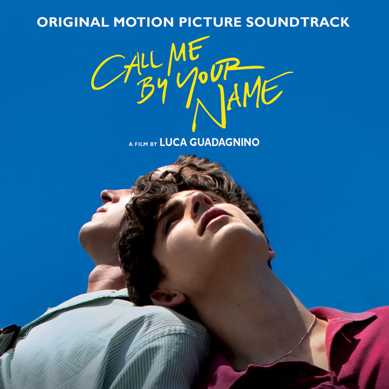

Mystery of Love

Mystery Of Love
Sufjan Stevens
Oh, to see without my eyes
The first time that you kissed me
Boundless, by the time, I cried
I built your walls around me
White noise, what an awful sound
Fumbling by rogue river
Feel my feet above the ground
Hand of God, deliver me
Oh, oh woe-oh-woah is me
The first time that you touched me
Oh, will wonders ever cease?
Blessed be the mystery of love
Lord, I no longer believe
Drowned in living waters
Cursed by the love that I received
From my brother's daughter
Like Hephaestion, who died
Alexander's lover
Now my riverbed has dried
Shall I find no other?
Oh, oh woe-oh-woah is me
I'm running like a plover
Now I'm prone to misery
The birthmark on your shoulder reminds me
How much sorrow can I take?
Blackbird on my shoulder
And what difference does it make
When this love is over?
Shall I sleep within your bed
River of unhappiness
Hold your hands upon my head
Till I breathe my last breath
Oh, oh woe-oh-woah is me
The last time that you touched me
Oh, will wonders ever cease?
Blessed be the mystery of love